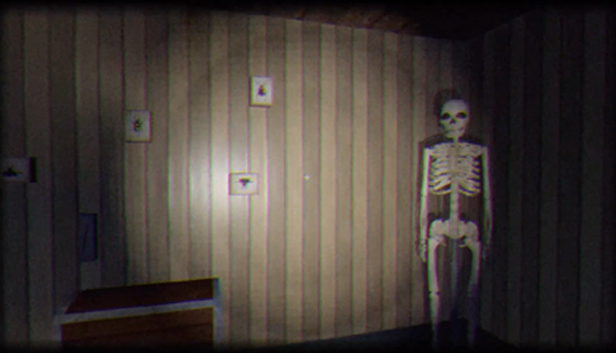

Game Jam Games
Here you can find all the jam games I've taken a part in. Suprisingly, I've shifted towards games built on Unity's UI canvases. I've also started working on solo projects more, which has been fun exercise.

A dress-up game made under 14 hours. A solo project, with a few hats drawn by a quest artist.
|
A dress-up game made under 14 hours. A solo project, with a few hats drawn by a quest artist.
|
| Dress-Up-A-Tron6000 |
A dress-up game made under 14 hours. A solo project, with few hats drawn by a quest artist. |
| ThatCowboyGame |
Local mobile partygame, a mix of Mafia and Bang. I was the designer/producer, created effects and put together scenes in Unity using the UI system. |
| Slot of Life |
Ludum Dare 44 submission. I wanted to create a slot machine and work with Unity's UI system. A solo project. |
| You Better Bee at Work! |
I did mainly programming and some effects with one other programmer´and 2 artists. I took part in creating the character controller
and I created a random level generator, which was scrapped at the last minute. |
| Home Swamp Home |
A GGJ submission, made with 5 people. I created the environment and the opening cinematic. |
| Supplements for the Lords |
2-person local multiplayer where your goal is to score goals. I made the characters and character animations. My goal was to go though the whole
3D character creation process in Blender and Unity. |
| The Lost Spring |
A Doodle Jump -like game for mobile. I created all art exluding the black level blocks. Team of 2 programmers, 1 musician and me, the goal was to learn how to use
gyroscope inputs and Anima2D. I also did the level generator, which we unfortunately forgot to optimize for mobile use. |
Trancemission
|
|
A rhythm game, GGJ submission. I came up with space-and-music related puns and created one 3D model (seen on main menu). |
| May the Best Fin Win |
A collection of local multiplayer minigames. The berry picking and wood cutting minigames were programmed by me (with help from other
programmers) |
| SHROOM |
First jam game. Team of 5 people. I created 3D models and characters. |